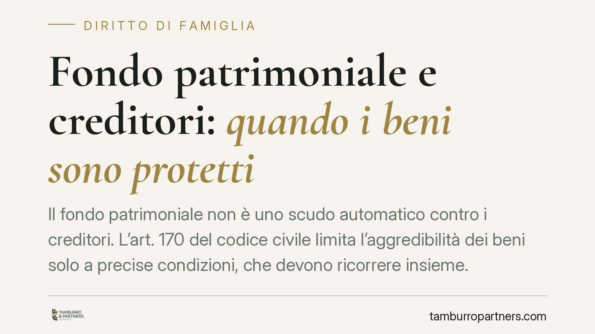

Fondo patrimoniale e creditori: quando i beni sono protetti
Il fondo patrimoniale non è uno scudo automatico contro i creditori. L'art. 170 del codice civile limita l'aggredibilità dei beni solo a precise condizioni, che devono ricorrere insieme. Comprendere quando la protezione opera davvero è essenziale per chi teme un pignoramento e per chi valuta la costituzione del fondo come strumento di tutela familiare.

Il fatto e perché conta
Il fondo patrimoniale è un vincolo di destinazione: coniugi o terzi destinano determinati beni (immobili, mobili registrati, titoli di credito) a far fronte ai bisogni della famiglia. L'idea diffusa è che questi beni diventino intoccabili. Non è così.
La protezione esiste, ma è condizionata. E l'onere di dimostrarne i presupposti non grava sul creditore: grava su chi vuole far valere il vincolo. Chiarire questo punto evita aspettative sbagliate e decisioni tardive.
Inquadramento normativo
La norma di riferimento è l'art. 170 cod. civ. Stabilisce che l'esecuzione sui beni del fondo (e sui loro frutti) non può avere luogo per debiti che il creditore conosceva essere stati contratti per scopi estranei ai bisogni della famiglia.
Da qui due condizioni, che devono ricorrere entrambe perché il bene sia protetto:
- il debito deve essere stato contratto per scopi estranei ai bisogni della famiglia;
- il creditore deve conoscere tale estraneità al momento in cui il credito è sorto.
Se manca anche solo una delle due, il bene resta aggredibile. Un debito estraneo ai bisogni familiari, ma di cui il creditore ignorava la natura, non è coperto dalla tutela.
La nozione di "bisogni della famiglia" è stata interpretata dalla giurisprudenza di legittimità in senso ampio: non solo lo stretto necessario, ma anche le esigenze volte al pieno mantenimento e allo sviluppo del nucleo familiare, con esclusione delle sole spese voluttuarie o speculative. Rilevano, in questa valutazione, gli indici concreti del caso: la natura dell'obbligazione, il rapporto tra le parti e il collegamento del debito con l'attività da cui la famiglia trae sostentamento.
Chi deve provare cosa
Qui si gioca la partita. La giurisprudenza è consolidata nel porre l'onere della prova a carico di chi eccepisce il vincolo, cioè il debitore o il coniuge che si oppone al pignoramento. Deve dimostrare due cose: che il debito era estraneo ai bisogni familiari e che il creditore ne era consapevole.
È una prova spesso difficile. La consapevolezza del creditore non richiede una dichiarazione esplicita: i giudici tendono a desumerla da elementi indiziari, come la natura del rapporto (ad esempio un debito d'impresa palesemente slegato dalla famiglia) o le circostanze in cui l'obbligazione è sorta. In presenza di debiti riconducibili all'attività economica del coniuge, la valutazione richiede particolare rigore, perché il confine tra esigenze familiari e attività professionale non è sempre netto.
Implicazioni pratiche
Per chi riceve un atto di pignoramento su beni conferiti al fondo, la difesa passa dallo strumento dell'opposizione all'esecuzione ex art. 615 cod. proc. civ. È in quella sede che si fanno valere le condizioni dell'art. 170 c.c., con l'onere probatorio appena descritto.
Attenzione al momento in cui il fondo è stato costituito. Se il vincolo è nato dopo che i debiti erano già sorti, il creditore anteriore può reagire con l'azione revocatoria (art. 2901 cod. civ.), chiedendo che l'atto costitutivo sia dichiarato inefficace nei suoi confronti. Il fondo costituito per sottrarre beni a creditori già esistenti offre quindi una protezione fragile.
Cosa fare in concreto
- Ricostruite la natura di ogni debito: verificate se l'obbligazione è collegata ai bisogni familiari o a un'attività estranea (impresa, garanzie a terzi, operazioni speculative).
- Raccogliete la documentazione sulla consapevolezza del creditore: contratti, corrispondenza, natura del rapporto, elementi da cui emerga che il creditore conosceva l'estraneità del debito.
- Controllate le date: confrontate la data di costituzione del fondo con quella di insorgenza dei crediti, per valutare l'esposizione all'azione revocatoria.
- Agite nei termini con l'opposizione ex art. 615 c.p.c.: i termini dell'esecuzione sono rigidi e la difesa tardiva rischia di essere inefficace.
Una verifica preventiva dell'assetto patrimoniale consente di distinguere i beni effettivamente protetti da quelli solo apparentemente al riparo. Il fondo patrimoniale è uno strumento di destinazione familiare, non un meccanismo di segregazione opponibile in ogni circostanza.
---
Contributo informativo a cura di Tamburro & Partners Avvocati – Avv. Giuseppe Tamburro. Non costituisce parere legale.
Ogni famiglia ha il suo equilibrio.
Separazione, divorzio, affidamento, assegno: se vuoi un confronto riservato su una specifica situazione, scrivi allo studio. Ti rispondiamo entro un giorno lavorativo.